Myth of the Pitch¶
John Yandell¶
"Serving is just like pitching a baseball." Probably everyone who ever took a serving lesson has heard this claim. It's is one of the most common myths in teaching. Unfortunately, it's not an accurate description. It's of minimal value in learning to serve and can even be counterproductive. This is especially true if the student has actually played baseball and can throw or pitch well.
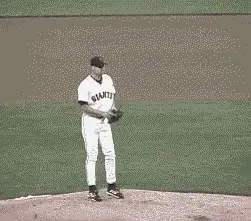
Is this the model for the serve? How much does the serve really have in common with the pitching motion in baseball?
Actually the baseball pitching analogy is part of a larger category of misleading analogy myths. Hitting a one-handed backhand is "just like" drawing a sword out of scabbard. Hitting a forehand volley is "just like" throwing a punch. Then there's a teaching pro, and a regular correspondent who insists that serving isn't really like throwing a ball at all. Really, it's just like throwing a javelin!
There are two related problems with these analogies. First, rather than simplifying our explanations of the strokes, they actually make them more complex. [What a tennis serve most resembles isn't a baseball pitch, a javelin throw, or any other motion from any other sport.] The motion a tennis serve most resembles is a tennis serve! Why try to hit a serve by emulating a motion from some other sport that may be bio-mechanically completely different?
Which brings me to the second problem with these analogies. They imply that we can't really understand tennis strokes on their own terms. They have to be compared to other motions so we can learn them. This is not only misleading, it makes tennis seem like a second rate sport. Tennis strokes are among the most beautiful and complex motions in all of sports. They deserve to be understood and taught on their own terms. Imagine a baseball coach trying to tell a pitcher that a fastball is really just like a first serve.
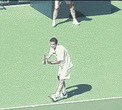
The bio-mechanics of the serve have little in common with the pitching motion and should be understood on its own terms instead of through confusing analogies.
To examine the limited and often counterproductive value of the myth of the pitch, let's compare the delivery of Jason Schmidt, one of the top pitchers in the National League, to Pete Sampras, one of the great servers in tennis history. By comparing a major league pitching motion side by side with Pete's serve, we'll see that the differences vastly out way the similarities.
The Obvious Differences
Take a look at the animations of the two motions and several major differences are obvious. [The first and most obvious difference is that tennis is played by striking the ball with an implement, that is, a tennis racquet. A pitcher pitches holding a ball in his bare hand.]
[Second, the balls are quite different. In addition to being made with completely different materials, a baseball is a about one third larger than a tennis ball, weighs more than twice as much, and has protruding, stitched seems.]
[A third major difference is the trajectories of the two balls. With the racquet in his hand, a player of roughly Pete's height makes contact with the ball about 10 feet above the court. A pitcher of the same size releases the ball at a height of about 6 feet above the ground--about 4 feet lower than the height of the serve at contact.]
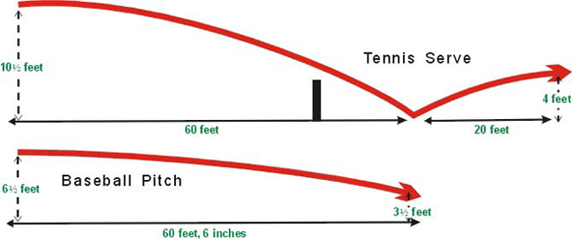
Relative trajectories of a tennis serve and a baseball pitch
The starting points of the pitch and the serve are therefore quite different. So are the ensuing flight paths. A pitch travels about 60 feet and passes through the strike zone at height of around 3 feet. It travels on a fairly straight line, dropping at most about 3 feet over it's entire flight. If things go according to plan, it never touches the ground.
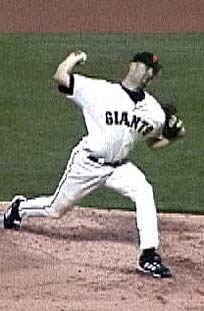
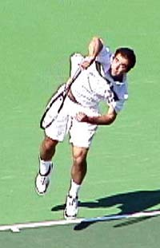
Two characteristics both motions share: the ability to rotate the arm internally backward from the shoulder, and the resulting pronation after the hit or ball release.
The serve on the other hand starts much higher and travels more steeply downward, bouncing at about 60 feet, the same distance at which a pitch crosses the plate. After the bounce, it rebounds to a height of about four feet and travels an additional 20 feet. The total distance the serve travels is around 80 feet, 20 feet more than the path of the baseball.
Unlike the relatively straight flight of the baseball, the flight path of the tennis ball is in the shape of a double arc, the first arc from the contact to the bounce, and the second smaller arc from the bounce to the receiver.
The charts show how different these flight paths really are. Given these differences, it is no wonder that the bio-mechanics are so different as well, as our comparisons of the key positions in the motions will make clear.
Two Points in Common
So let's turn to the bio-mechanics, and compare the positions of the body at various stages in the two motions. Let's start by acknowledging the two points that the motions really do share in common.
First, there is the relatively low level of muscle tension in the body. If you watch the great pitchers, their motions have a silky, relaxed feeling, and this is certainly similar to great servers.
Second, there is one major technical point in common. Servers and pitchers both have significant internal arm rotation and extensive pronation in their deliveries. In fact, the more natural internal arm rotation a player has, the more natural ability to serve or pitch, and the more extreme the pronation.
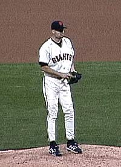
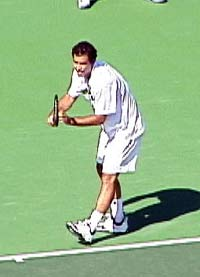
Note the differences in the shoulders and the feet. Jason starts basically facing the target zone. Pete begins with the feet and shoulders turned at about 90 degrees.
Pete, for example, can achieve a full racquet drop with his elbow and upper arm almost horizontal or parallel to the court. This is because of his natural ability to rotate the arm backward from the shoulder an ability he shares with most major pitchers including Jason.
Beyond these two points, however, there is little or nothing about the position of their bodies or arms that is the same. The differences vastly outweigh the similarities, as we shall see, and this is why the pitch is such a poor model for developing the serve.
Starting Stance
Let's begin by comparing the starting stances. Pete starts with his torso sideways to the net. His left foot is in front and his right foot is set behind. Jason's torso is square or parallel to home plate. His feet are also parallel to this same line. And just to repeat the obvious: Pete has a racquet in his dominant hand, not a baseball.
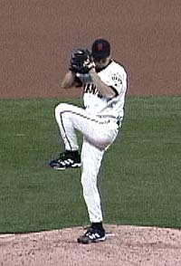
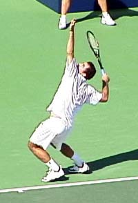
Pete has his weight coiled primarily on the front leg, while Jason's front leg is kicking back toward his chest! Note also the angle of the torsos.
The Contact Point/Release¶
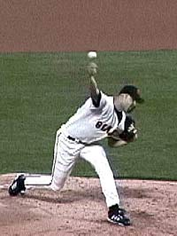
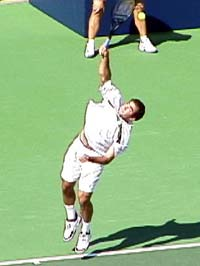
¶A core difference: at contact Pete has uncoiled upward into the air, while Jason has both feet planted in a wide stance.¶
Note how Pete makes contact in the air. This is the difference in the role of the legs. The uncoiling is driving his entire body and his arm and racquet upward toward the ball.
Jason is shifting his weight forward and is firmly planted.
Obviously, the contact point for Pete is much higher than the pitching release of the ball. The result is the differing trajectories of the ball described above.
Also note again the angle of the torso. Due to the tossing position and the "left launch," (Click here), Pete's torso is leaving the court at a angle to his left. Jason is almost perfectly straight up and down from the waist.
Finally, there is the position of the head. Pete has perfect head position, looking up at the moment of contact, even with his toss fairly far to the left. (Click here for Pete's Toss). Jason, on the other hand, is looking forward, with his head toward the target zone.
Body Rotation¶
A key difference is in the rotational sequence in the two motions. Whereas the pitcher releases the ball with his torso already facing the batter, the server is still rotating his torso and is at about a 45 degree angle to the net at the time of contact.
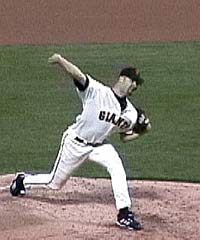
A pitcher rotates his torso ahead, parallel to the target zone while his arm lags behind. At the same point in the motion, Pete's shoulders are still about 60 degrees to the baseline.¶
If a tennis player with a good feel for throwing a baseball took the pitch analogy seriously, he would rotate far too early and end up with his torso much too far around at contact.
In fact, a top Norcal senior player, who was once a Division 1 college pitcher, suffers from this exact problem. His feeling for the release of the pitch leads him to severely over rotate at contact on his serve. The bio-mechanical pattern is so deeply ingrained in his muscle memory that he has never been able to correct it, \despite his keen awareness of the problem and of the loss of power it is causing in his serve.
Pros who advocate the throwing analogy can unwittingly cause this fundamental problem for their students, particularly those with a strong background in baseball.
The pitcher tends to whip his torso around while the arm lags behind. This may allow him to generate velocity with a heavy ball held directly in the hand, but on the serve, this dissipates energy in the service motion and is widely recognized as a technical flaw, for example in the motion of a player such as Anna Kournikova.
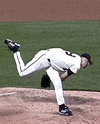
Modeling the serve on the pitching motion can lead to a disastrous bend at the waist on the followthrough.¶
Followthrough¶
The angle of the torso after the release/hit is also radically different in the two motions. A good \pitcher, as the animation shows, can end up bent over at the waist almost 90 degrees as he follows through after the release. Tennis players in contrast stand up much straighter at the waist with their shoulders and hips more closely in line. This probably has to do with the lower trajectory taken by the baseball.
[Again, as any good teaching pro knows, bending too much at the waist is a disaster on the serve. It's a common problem with junior players and even effects top pros like Venus Williams. The throwing analogy, taken seriously, can encourage these torso movements-early rotation and bending at the waist. Both are destructive to the serve.]
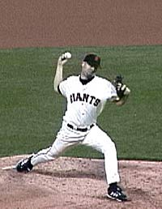
The pitcher releases with both feet on the ground. The server uncoils and leaves the court before contact.¶
The Legs¶
The use of the legs is another important, radical difference between the pitch and the serve. The tennis player coils the knees and launches upward and only slightly forward to the ball, making contact with both feet in the air, landing about 2 feet inside the court. The server lands on his front foot and with his feet about the same distance apart as they where at the start of the motion.
The baseball pitcher, by contrast, releases the ball from a very wide stance with both feet planted firmly on the ground.
During the wind up the pitcher raises his front leg, bends his knee, and brings his thigh back almost to his chest. He then takes a gigantic step forward and plants virtually all his weight on the front foot just prior to the release. The back foot remains back, far behind the front, and is also on the ground. The width of his stance at this point can be 5 feet or more.
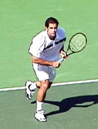
\ Here Pete has transferred his weight to his front leg on his way to the net.Anyone who has ever played baseball is familiar with this feeling of stepping, planting, and throwing. Stepping into the serve, on the other hand, is a recipe for bio-mechanical disaster. Stepping with the front foot leads to foot faults and late contact behind the plane of the body. Stepping with the back foot causes over rotation in the torso. Stepping with the back foot can also cause the head and shoulders to drop too soon in the motion.
[Finally, note the position of the rear leg. When Pete lands in the court, his back or rear leg is in the air. This is the technical end of the motion. He has landed on balance on the front foot, and now has the option to either take the next step forward to the net, or recover into the ready position if he plans to stay back.]
Compare this to Jason's leg. There is a long, almost lazy cross step forward and across his body with his back foot, the natural effect of the continuing momentum of his delivery. Unlike Pete, who takes this step as part of a movement pattern forward, the step for the pitcher is a natural consequence of the delivery. For the tennis player, stepping through the motion in any way that approximates the pitch is a technical kiss of death.
confidence](media_myth-of-the-pitch/media/image20.jpg) 
In contrast to Sampras above, the pitcher's weight remains on the front foot and the back leg has taken a long lazy step forward.¶
Rather than stretching for analogies in other sports, the key to the serve as well as the other strokes in tennis is a careful analysis of the stroke itself. This is the point of many of our series articles, such as the one on Pete' serve, as well as Stroke Archive
With the Stroke Archive you have the chance to see exactly what the top players are doing at each key moment in all the strokes and to use these players as physical and visual models for your own game. Doesn't that sound like a better idea-modeling your serve on a great server--instead of an athlete from some other sport that isn't even played with a tennis racquet?

John Yandell is widely acknowledged as one of the leading videographers and students of the modern game of professional tennis. His high speed filming for Advanced Tennis and TPA have provided new visual resources that have changed the way the game is studied and understood by both players and coaches. He has done personal video analysis for hundreds of high level competitive players, including Justine Henin-Hardenne, Taylor Dent and John McEnroe, among others.
In addition to his role as Editor of TPA he is the author of the critically acclaimed book Visual Tennis. The John Yandell Tennis School is located in San Francisco, California.